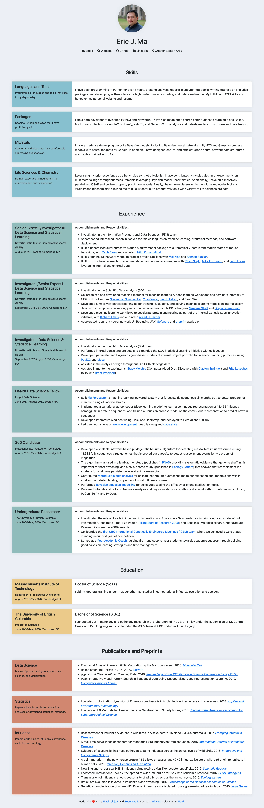

written by Eric J. Ma on 2021-04-24 | tags: css html career development coding programming design
Once in a while, I make it a practice to hack on my resume. The goal isn't explicitly to keep it relevant, though. Instead, I use it as an excuse to practice CSS. The result is something I'm pretty pleased with. Come read about how I did it!
Once in a while, I make it a practice to hack my resume. The goal isn't explicitly to keep it relevant, though. Instead, I use it as an excuse to practice CSS. (But then again, since I have it open anyways, I update the content along the way.)
Since I've been on leave for a while, I decided that it was a good idea to update my resume design. The previous iteration was based on Nord, but my design choice felt a bit dark and bland simultaneously. This time around, I decided to spruce things up a bit. The result is something I'm pretty pleased with.
To gather inspiration, I browsed several designs that were freely available online. Amongst those that I personally found aesthetically pleasing and informative, I noticed that:
One of the designs that I saw used a left-right layout for each item in education and experience. For example, with work experience, the left third of a Bootstrap card would contain the role title, with a short description placed on that card's right side. One example I saw also included an aesthetically pleasing pine green background colour on the left third. That became one of the biggest design inspirations that I used.
Additionally, I revisited the Nord theme colours. I rediscovered nord7 through to nord15, the non-blue/gray colours that are part of the standard palette. They were gorgeous colours! Since my resume already had sections, I decided that the colours could help visually identify each section.
I saw two CSS features in other resumes and decided to incorporate them. They were (1) drop shadows for the cards and (2) hover scaling to give the resume a bit of additional "pop." Those turned out to be easy-to-implement yet beautiful interaction elements that I could include. Along the way, I learned about CSS transitions and scaling too.
Finally, in all the examples that I reviewed, the ones that were the cleanest had no icons on the headers. Icons next to headings were something I used to have because I thought it looked cool. I was also using it to getting familiar with FontAwesome's icon sets. However, my personal aesthetic has changed now. I now think the resume looks less cluttered and much cleaner without the icons.
Now, far from setting requirements and sprinting one-shot towards the final product, I actually iterated over a few ideas and refined them towards the final design that I settled on. Everything I wrote above is a crystallized summary of the process, which in reality, was much messier!
I wanted to highlight two technical pieces here: (1) implementing the scale transition on hover and (2) implementing cards with headers on the left and content on the right. Both of these assume some degree of familiarity with Bootstrap CSS and its card system for laying out content.
The effect I was going here is to make a particular card increase in size when the user's mouse cursor hovers on top of the Bootstrap card. To do so, I wrote two CSS classes, one to control transitioning and the other to control hover on cards:
.transition { transition: all 500ms; } .card-hover:hover { transform: scale(1.05); }
I then applied the .transition and .card-hover CSS classes to every card that I wished to have hovering enabled for:
<div class="card card-hover transition"> ... content goes here ... </div>
Now, anytime someone mouses over a card with those two CSS classes applied to them, the card and all of its child elements will increase in scale to 1.05x in size.
To implement left-right organization on card contents, we actually nest a zero-gutter (g-0) row inside the card, and then use the col-md-4 and col-md-8 (the numbers should add to 12, ideally) classes on two divs to split the card horizontally:
<div class="card" id="main-card-content"> <div class="row g-0" id="row-placeholder"> <div class="card-body col-md-4 bg-blue" id="left-side"> <h2>Header text</h2> <small>Sub-text to header</small> </div> <div class="card-body col-md-8" id="right-side"> <p>Some elaboration text goes here.</p> </div> </div> </div>
To implement colours, I used the Nord CSS variables in my custom CSS class definitions. For example, you'll notice the .bg-blue class definition used in the left side of the card:
@import "nord.css"; .bg-blue { background-color: var(--nord8); }
Now, the left side of the card will have a blue background.
Having described the design process and outcomes, here's a link to the final product.
And here's a full screenshot of the page in case you're feeling lazy :).

This was a fantastic exercise, crafting a personal resume to my liking. In particular, I enjoyed discovering new things about CSS that I didn't know before. I also enjoyed bringing some pop and colour into my resume.
Having previously structured my resume in a pretty sane YAML format made it much easier for me to change what I thought needed reworking. Since a resume is primarily composed of data, this reinforced for me that storing data in a sane data structure is supremely important. Counterfactually, if my resume were entangled with the HTML by being written directly in HTML, I'd lose the flexibility to rework isolated parts of the system.
Finally, this exercise reinforced for me that art is a beautiful medium for learning tech. Styling a resume is nothing critical. But treating the act of styling the resume as an art project means there is a creative outlet for anything technical to learn. The resume, I think, is a particularly excellent win-win outlet. Because it's highly personalized, you can flex your design and creativity muscles. Simultaneously, because it is highly useful, you'll effectively be investing in your career development anyways.
@article{
ericmjl-2021-learning-css-by-styling-a-resume,
author = {Eric J. Ma},
title = {Learning CSS by Styling a Resume},
year = {2021},
month = {04},
day = {24},
howpublished = {\url{https://ericmjl.github.io}},
journal = {Eric J. Ma's Blog},
url = {https://ericmjl.github.io/blog/2021/4/24/learning-css-by-styling-a-resume},
}
I send out a newsletter with tips and tools for data scientists. Come check it out at Substack.
If you would like to sponsor the coffee that goes into making my posts, please consider GitHub Sponsors!
Finally, I do free 30-minute GenAI strategy calls for teams that are looking to leverage GenAI for maximum impact. Consider booking a call on Calendly if you're interested!